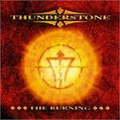

|
|
||
Thunderstone : The Burning (2004) |
|

http://www.thunderstone.org |
1. Until we Touch the Burning Sun 5:54 |
7.7/10 |
|
The Burning es el segundo disco del quinteto finlandés Thunderstone. Con decir que son finlandeses y que tocan power metal casi es suficiente para definir su estilo, enraizado en otras bandas finlandesas, como Stratovarius, pero también en otros clásicos del power metal, como Gamma Ray o Nocturnal Rites, con bastantes teclados aunque sin olvidar las guitarras y con una voz, la de Pasi Rantanen, lo bastante potente, ligeramente rota y que aunque no llega a tonos muy altos hace un buen trabajo durante todo el álbum. "Until we touch the burning sun" es un tema de power metal progresivo bastante típico, que comienza con un insistente riff de teclado, seguido por una voz muy suave que bruscamente deja paso a las guitarras que, sin desembarazarse de los sintetizadores, crean una melodía interesante a la que quizás le falta alguna parte realmente sobresaliente. "Break the emotions" marca el ritmo a base de doble bombo, y la melodía de nuevo a duo entre los teclados y las guitarras, aunque estas últimas tienen el protagonismo. El tercer corte, "Mirror never lies", es una canción de tempo medio, en la que la parte más destacable es el estribillo, aunque tampoco es de los que se recuerdan la primera vez. "Tin star man" recupera el doble bombo y lo acompaña de unas vertiginosas guitarras rítmicas, que junto a la intensidad que plasma la voz de Pasi Rantanen, crean un tema agresivo y contundente. La quinta pista nos descubre "Spire", otro tema rápido, con varios cambios de ritmo y de fuerza. "Sea of Sorrow" es una balada bastante emocionante, cantada sobre los teclados en algunas partes, pero que también deja sitio a las guitarras rítmicas, y que en conjunto está bastante bien. Tras la pausa de la balada, en "Side by side" se retoma la relación entre el doble bombo y las guitarras, en este caso adornada con buen criterio por los teclados. "Drawn to the flame" tiene un cierto aire a heavy metal clásico, al menos hasta que aparecen los teclados, cañero, un poco crudo y con la voz al filo de sus posibilidades. "Forth into the black" es una pieza de ritmo pulsante, sonido algo tétrico, y un estribillo sencillo pero resultón. El disco termina con "Evil within", doble bombo, una buena melodía y el que es el mejor estribillo del álbum; un tema que bien podría haber sido el primero en lugar del último. Este disco no está mal: las canciones son buenas, están bien ejecutadas y bien grabadas, pero no tiene elementos realmente sobresalientes, se echan en falta buenos estribillos y coros, y tampoco aporta frescura y originalidad al ya muy trillado género del power metal y por tanto no lo puedo recomendar directamente, aunque es probable que guste a muchos de los incondicionales del power metal, y a fans de las bandas que he mencionado al principio. |
||
- Crítica escrita por Rubén Béjar - |
||